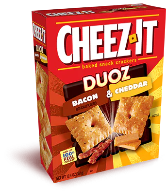
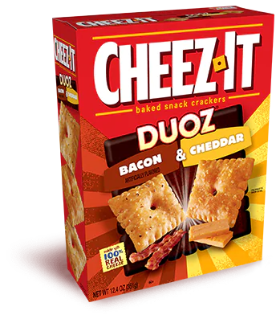

Cheez-Its:
Cheez-Its come in a surprisingly huge variety. The standard box being fairly outclassed by the many newer variations. Below are my favorites to eat, most of which I found during the quarantine.
Yes, you should buy some cheez-its.
- My Wife not yet knowing the mistake she made
Extra Toasty

By far my favorite type of Cheez-its!
Pepper Jack

Surprisingly tastes like queso!
DUOZ Bacon & Cheddar
Bacon goes great with cheddar!

Snap'd Double Cheese

Provides the intense cheese flavor the original is lacking!
Snap'd Cheddar Sour Cream & Onion

Easiest to eat an entire box in one sitting!